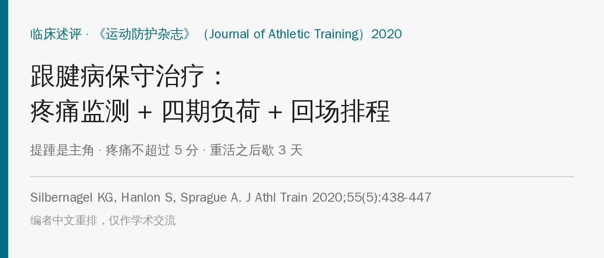
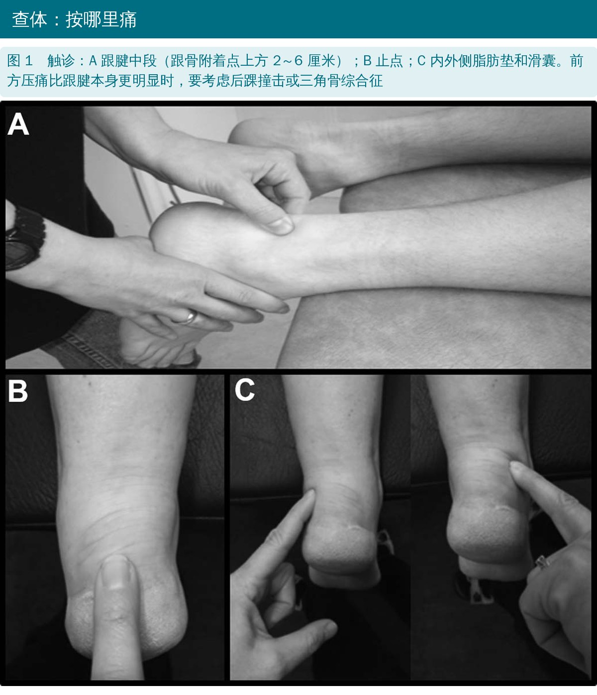
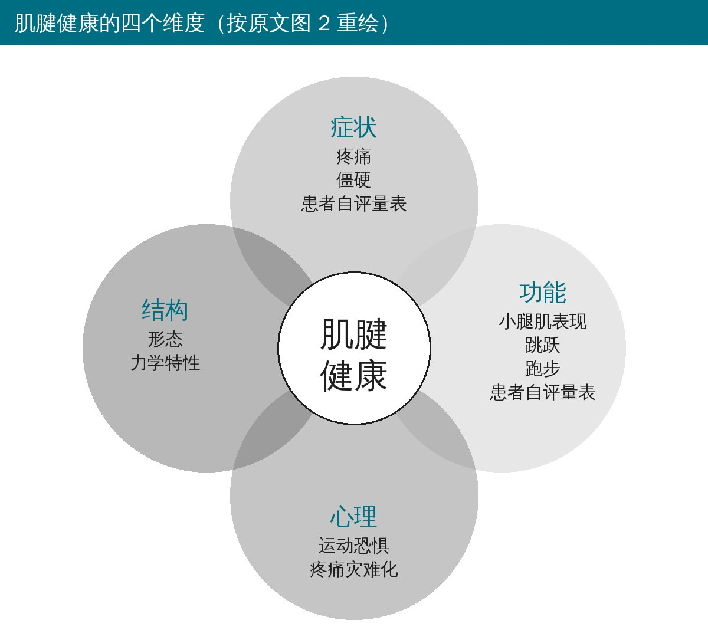
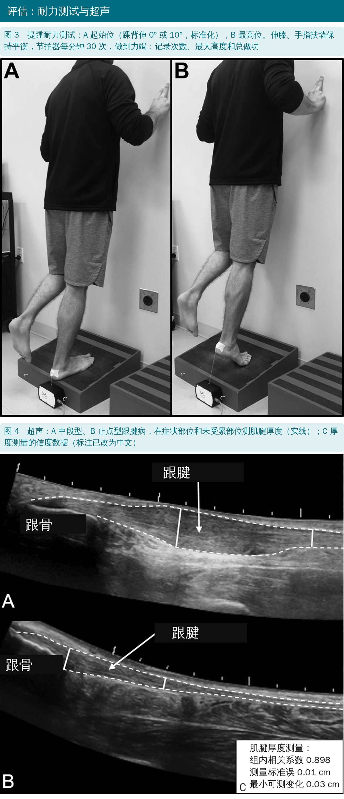
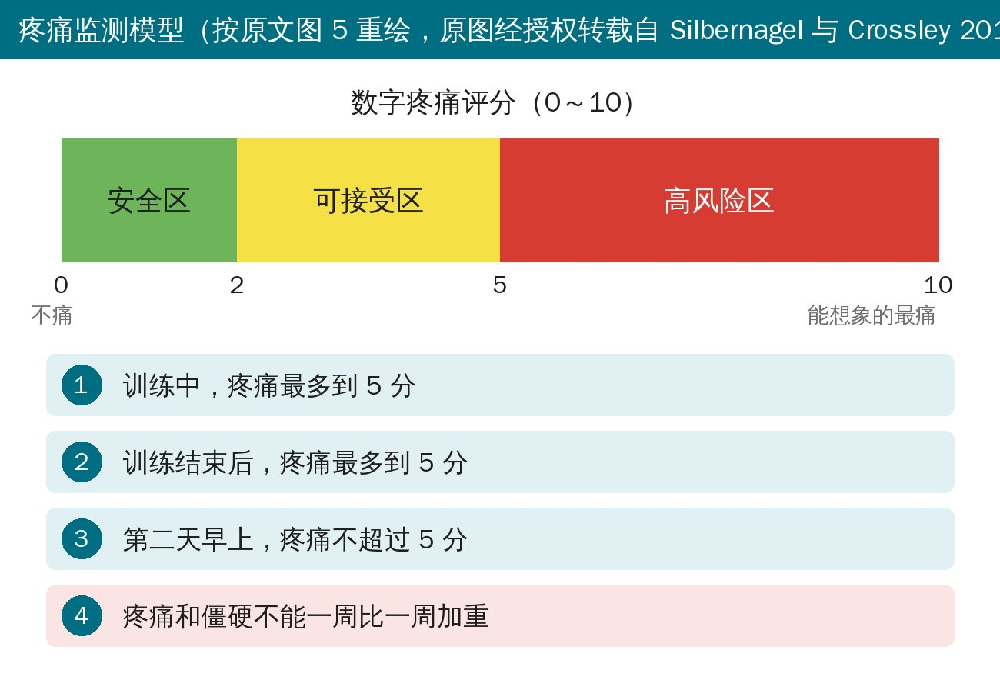
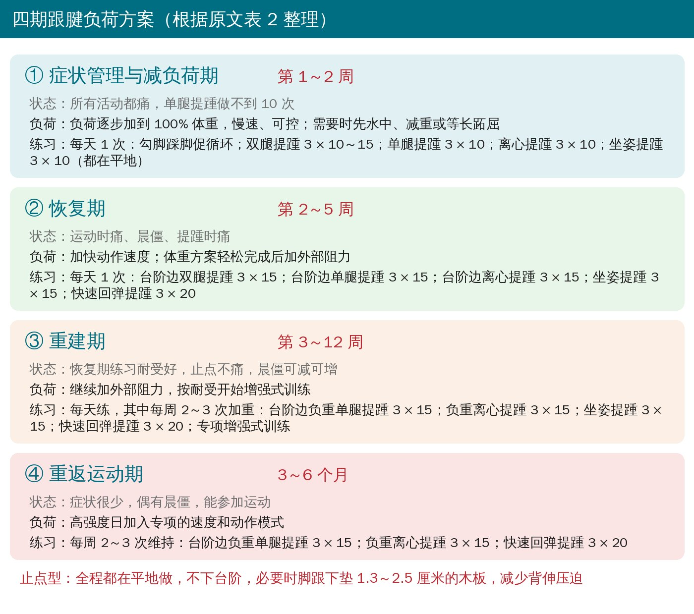
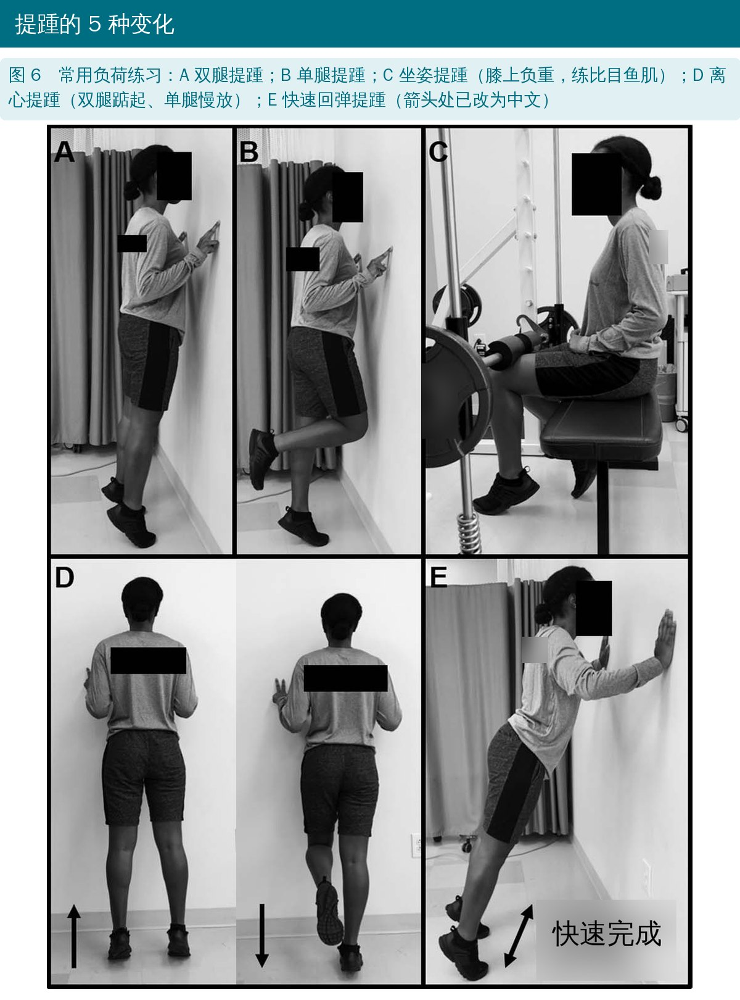
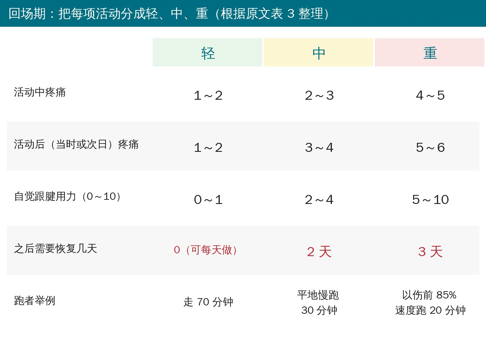
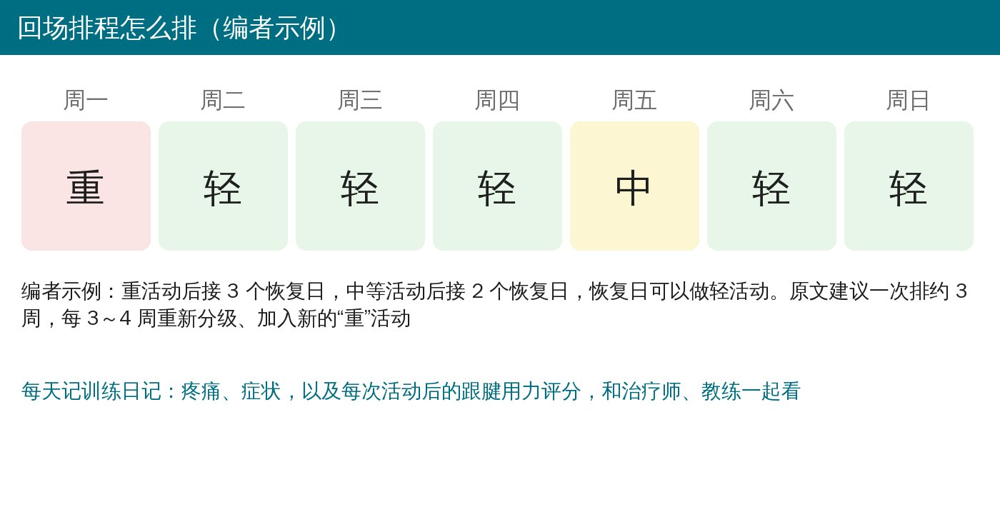

🔖原文信息（编者中文重排）
📚 文献信息
▪ Silbernagel KG, Hanlon S, Sprague A. Current clinical concepts: conservative management of Achilles tendinopathy. J Athl Train. 2020;55(5):438-447.
▪ 作者来自美国特拉华大学物理治疗系；第一作者是“疼痛监测模型”的提出者
▪ 临床述评，推荐强度按 SORT 分级（A 一致高质量证据、B 证据有限或不一致、C 共识或专家意见）
• 很常见：精英田径运动员 43% 有过跟腱症状，中长跑高达 83%；但全科门诊里 65% 和运动无关
• 60%～80% 的运动员发病前训练量或强度突然增加（训练负荷失误）
• 恢复常要一年以上，再伤率 27%～44%；症状好了不代表功能和结构恢复了
• 分型：中段型 55%～65%、止点型 20%～25%、近端肌腱肌腹交界 9%～25%；约 30% 双侧
• “肌腱炎”这个叫法不建议再用——病理上主要是退变或愈合失败，不一定有炎症
• 可干预的风险因素：跖屈力量弱、髋神经肌肉控制差、踝背伸和距下活动异常、足过度旋前、体重大；氟喹诺酮类抗生素（约用药 8 天后）也和跟腱病、断裂有关
• 典型症状：晨起或久坐后僵硬、按压痛、跑跳时痛、成绩下降；早期常是“刚开始运动痛，热身后消失”；不受力时往往不痛
• 中段型：跟骨附着点上方 2～6 厘米按压痛（敏感度 84%、特异度 73%）+ 自述该处疼痛（78%、77%）
• 弧形征：捏住增厚结节，主动勾脚、踩脚时结节跟着移动为阳性（敏感度 25%、特异度 100%）
• 皇家伦敦医院试验：休息位捏到最痛点，主动背伸后再捏同一点，疼痛减轻为阳性（51%、93%）
• 鉴别：急性跟腱断裂、后踝撞击、三角骨综合征、副比目鱼肌、腓肠神经激惹、脂肪垫激惹、全身性炎症疾病

🔖原文图 1
作者主张从四个维度评估“肌腱健康”，回场前每个维度都要恢复，否则容易复发。

🔖四维度
• 症状：按压痛和单腿跳痛（0～10）；维多利亚运动研究所跟腱问卷（0～100，变化 10 分以上算有意义）；足踝结局评分、足踝能力量表
• 功能：负重弓步测背伸（最小可测变化 3.88）；提踵耐力测试（伸膝、每分钟 30 次、做到力竭，记次数、高度、总做功，算两侧对称指数）；等长或等速跖屈力量；单腿连续跳（腾空/触地时间比）、单腿落地反跳
• 结构：超声测肌腱厚度，和健侧或同侧正常段比较；剪切波弹性成像测力学特性
• 心理：坦帕运动恐惧量表（17 题，0～68）

🔖原文图 3、4
运动是证据最强的治疗（A 级）。离心、慢速向心 + 离心都有效；等长收缩被说成“更好的起步”，但对跟腱病没有证据支持它比其他方式好。肌腱对更大负荷、更长时间反应更好；后期还要练速度（快速也会加大肌腱负荷）。

🔖疼痛监测模型
• 不需要完全休息——完全卸载反而不利于恢复
• 训练中、训练后、第二天早上疼痛都不超过 5 分；疼痛和僵硬不能一周比一周重
• 维持心肺可以用深水跑、骑车这类跟腱负荷小的运动
• 让运动员记训练日记：做了什么、其他活动、早上和运动时的疼痛评分
• 和运动员、教练、队医等所有人讲清楚负荷管理

🔖四期方案

🔖原文图 6
• 第 1 期（1～2 周）：先在平地上把提踵的向心、离心都控制好；做不了提踵就从等长或弹力带开始
• 第 2 期（2～5 周）：中段型改到台阶边做（加大活动范围），加快速回弹提踵，为增强式训练做准备；减重跑台或深水跑开始恢复跑步；同时处理踝、足内在肌、髋膝力量等其他问题
• 第 3 期（3～12 周）：加外部负荷——负重背心、背包、腿举机或史密斯机；在家通常从 10 磅（4.5 千克）开始，3 × 15 轻松完成就加重；也可以每周 3 次在健身房做重的、在家每天做轻的；增强式先双腿后单腿
• 提醒运动员：力量和耐力恢复了也要继续做提踵，肌腱还在恢复
• 止点型：全程在平地做，必要时脚跟下垫 1.3～2.5 厘米木板，避免背伸时肌腱被跟骨挤压
开始跑跳前：日常走路疼痛 ≤1～2 分；单腿跳 20 次疼痛超过 2 分的人，很难在疼痛监测范围内开始跑步。
肌腱从重负荷中恢复需要 36～72 小时，轻活动可以更频繁。作者把运动员要做的每项活动，按疼痛和“自觉跟腱用力”分成轻、中、重三级：

🔖活动分级
• 轻：可以每天做；中：之后要 2 个恢复日；重：之后要 3 个恢复日
• 分级由治疗师、运动员、教练一起定；一次排约 3 周的计划
• 每 3～4 周重新分级，加入新的“重”活动，逐步回到全量训练和比赛
• 运动员每天在日记里记疼痛、症状和每次活动后的跟腱用力评分

🔖排程示例
回场前要确认：症状恢复 + 提踵耐力和跳跃测试恢复，最好有两侧对称或伤前数据对比。
| 治疗 | 原文评价 | 推荐强度 |
|---|---|---|
| 运动 | 证据最强；离心或慢速向心 + 离心都有效；每周至少 2 次 | A |
| 矫形鞋垫 | 无法给出推荐；定制和成品没差别；可能减少跟腱应变，但不减痛 | B |
| 低能量激光 | 证据矛盾，可作为运动的辅助 | B |
| 贴扎 | 可能改变足姿、减少应变，减痛证据有限 | C |
| 离子导入 | 对急性中段型可减轻疼痛和症状 | B |
| 器械辅助软组织松动 | 踝活动度受限时有效 | C |
| 体外冲击波 | 短期减痛、促进愈合；和离心训练合用优于单纯离心；个体差异大 | B |
| 注射 | 没有证据支持单独使用或配合运动 | A |
作者强调：负荷训练才是核心，手术等侵入性治疗只在规范康复失败后才考虑。
• 最好的预防是别忽视早期“小”症状：疼痛出现前，往往已经有几周到几个月的晨僵和轻微痛，甚至跑步变慢、跳得不高
• 监控训练负荷，避免突然加量；定期测试表现，发现下滑及时调整
• 超声上的结构改变可以先于症状，但不代表一定会发病，要结合负荷和表现判断
• 这是临床述评，四期方案和回场排程主要来自作者团队自己的研究和经验
• 推荐强度是作者按 SORT 自评的，部分评级值得商榷（如运动恐惧量表评 C，注射“没有证据支持”评 A）
• 回场排程（轻、中、重分级和恢复天数）还没有前瞻性研究验证
原文里对不上的地方：
• 表格编号对错位：正文说“表 2”是治疗汇总、“表 3”是分期方案、“表 4”是活动分级，实际表 2 是分期方案、表 3 是活动分级、表 4 是治疗汇总
• 参考文献引错：分期方案表标注引自文献 7（那是推荐强度分级标准），活动分级表标注引自文献 40（那是弹性成像的研究）；低能量激光引文献 47，而文献 47 在正文是“肌腱需 36～72 小时恢复”的出处
• 和自家模型矛盾：疼痛监测模型规定活动后疼痛不超过 5 分，但“重”活动的活动后疼痛写的是 5～6 分
• 活动分级的疼痛区间重叠：轻 1～2、中 2～3，评 2 分算哪一级不清楚
• 超声厚度的测量标准误，正文写 0.02 厘米，图 4 写 0.01 厘米
• 分期时间重叠：恢复期第 2～5 周、重建期第 3～12 周
• 跟腱痛不用完全停练，用疼痛监测模型管负荷：训练中、训练后、次日早上都 ≤5 分，且不逐周加重
• 提踵是主角：平地双腿 → 单腿 → 离心 → 坐姿 → 台阶边 → 快速回弹 → 负重；止点型不下台阶
• 负重从 4.5 千克左右起步，3 × 15 轻松就加重；力量恢复了也别停
• 走路痛 ≤1～2 分、单腿跳 20 次痛 ≤2 分，再开始跑跳
• 回场按轻、中、重排活动，重活动后歇 3 天、中等歇 2 天
• 评估四个维度：症状、功能（提踵耐力、跳跃）、结构、心理，别只问“还痛不痛”
• 早期出现晨僵、成绩下滑就要调整负荷，不要等到痛得练不了
原文表 1 推荐强度分级（SORT）
| 推荐强度 | 定义 |
|---|---|
| A | 基于一致、高质量、以患者为导向的证据 |
| B | 基于不一致或质量有限、以患者为导向的证据 |
| C | 基于共识、常规做法、专家意见、以疾病为导向的证据，或诊断、治疗、预防、筛查的病例系列 |
原文表 2 跟腱综合负荷方案
| 阶段 | 患者状态 | 负荷强度 | 目标 | 练习 |
|---|---|---|---|---|
| 症状管理与减负荷期：第 1～2 周（需要时更长） | 所有活动都痛，单腿提踵做不到 10 次 | 逐步加到 100% 体重，慢速、可控；需要时先水中、减重或等长跖屈 | 开始练习，了解伤病性质，学会用疼痛监测模型 | 每天 1 次：疼痛监测模型讲解和运动建议；勾脚踩脚促循环；平地双腿提踵 3 × 10～15；平地单腿提踵 3 × 10；平地离心提踵 3 × 10；坐姿提踵 3 × 10 |
| 恢复期：第 2～5 周（需要时更长） | 运动时痛、晨僵、提踵时痛 | 加快速度、加外部阻力增加跟腱负荷；体重方案轻松完成后再加阻力 | 开始力量训练 | 每天 1 次：台阶边双腿提踵 3 × 15；台阶边单腿提踵 3 × 15；台阶边离心提踵 3 × 15；坐姿提踵 3 × 15；快速回弹提踵 3 × 20。止点痛者继续在平地做 |
| 重建期：第 3～12 周（需要时更长） | 恢复期练习耐受好，止点不痛，晨僵可能减轻或加重 | 继续加外部阻力，按耐受开始增强式训练 | 更重的力量训练，增加或开始跑跳 | 每天练，每周 2～3 次加重：台阶边负重单腿提踵 3 × 15；台阶边负重离心提踵 3 × 15；坐姿提踵 3 × 15；快速回弹提踵 3 × 20；专项增强式训练。止点痛者继续在平地做 |
| 重返运动期：3～6 个月（需要时更长） | 症状很少，偶有晨僵（非每天），能顺利参加运动 | 在前一阶段基础上，高强度日加入专项速度和动作模式 | 维持训练，无症状 | 每周 2～3 次：台阶边负重单腿提踵 3 × 15；台阶边负重离心提踵 3 × 15；快速回弹提踵 3 × 20。止点痛者继续在平地做 |
原文表 3 跟腱负荷活动分级与建议恢复天数
| 特征 | 轻 | 中 | 重 |
|---|---|---|---|
| 活动中疼痛（0～10） | 1～2 | 2～3 | 4～5 |
| 活动后（当时或次日）疼痛 | 1～2 | 3～4 | 5～6 |
| 自觉跟腱用力（0～10） | 0～1 | 2～4 | 5～10 |
| 活动间需要的恢复天数 | 0（可每天做） | 2 | 3 |
| 跑者举例 | 走 70 分钟 | 平地慢跑 30 分钟 | 以伤前 85% 速度跑 20 分钟 |
原文表 4 跟腱病的治疗与推荐强度
| 治疗 | 证据 | 推荐强度 |
|---|---|---|
| 运动 | 减轻症状、改善功能的证据最强；任何机械负荷（离心或慢速向心 + 离心）都有效；每周至少 2 次 | A |
| 矫形鞋垫 | 无法给出推荐；定制与成品无差别；可能减少跟腱应变；不能减痛 | B |
| 低能量激光 | 证据矛盾；可作为运动的辅助 | B |
| 贴扎 | 可能改变足姿、减少跟腱应变；减痛证据有限 | C |
| 离子导入 | 能减轻急性中段型跟腱病的疼痛和症状 | B |
| 器械辅助软组织松动 | 踝关节活动度下降时有效 | C |
| 体外冲击波 | 短期减痛、促进肌腱愈合；配合离心负荷优于单纯离心；结果差异大 | B |
| 注射 | 没有证据支持单独使用或配合运动 | A |
欢迎关注悦美力公众号，获取更多物理治疗的专业知识！
📄参考文献：
Silbernagel KG, Hanlon S, Sprague A. Current clinical concepts: conservative management of Achilles tendinopathy. J Athl Train. 2020;55(5):438-447. doi:10.4085/1062-6050-356-19
原文版权归美国国家运动防护师协会所有，PDF 未标注知识共享协议；原文图 5 为经授权转载。本文仅为学术交流用的中文解读，照片引自原文图 1、3、4、6（编者加中文标注，超声英文标注和箭头说明改为中文，器械文字已模糊），图 2、5 按原图重绘为中文，四期方案卡、活动分级卡与排程示例为编者中文绘制，表格为编者翻译，如有侵权请联系删除。